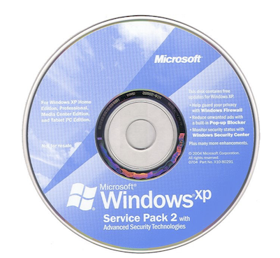
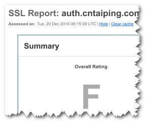

HTTPS基础原理和配置 - 加密协议SSL和TLS
在 2019-03-30 Saturday 发布于 DevOps 分类 • 1 min read
近期又碰到了SSL相关的事情, 就心血来潮开个新专题 - 《HTTPS基础原理和配置》
本文是第一篇文章， 主要介绍SSL TLS加密协议的相关内容。
加密协议历史概要¶
SSL TLS加密协议其实并没有很长的历史，1995年网景发布了SSL v2.0，这也是web加密的开始。这使得电子商务领域，人们可以在线提交密码和信用卡，并且至少是相当安全的。
SSLv3.0很快发布，这版被保罗·柯克（Paul Coker）及其他人完全重写。这是一个非常坚实的协议。事实上，IETF采用SSL v3.0，并使它成为并不是网景独有的协议，叫做TLS（Transport Layer Security）。SSL意思是安全套接字层，但现在叫传输层安全。
所以，TLS v1.0几乎和SSL v3.0 一模一样，只是进行了一两个小优化，并且IAF使之标准化。如果你深究这些协议，TLS v1.0实际上就是SSL v3.1；所以你可以认为他们是连续的。
但是最终IETF提出了新版本v1.1（一些小优化），然后是v1.2，引入了一些新的加密算法。但是看到这你可能会想“好吧，有些客户端支持这些，有些客户端支持更新的，这取决于它们发布的时间. 安全性上可能差不太多". 但实际在安全意义上，这些中的大多数已经以被破解了。
关键历史节点¶
- SSL v2.0 1995年 网景 发布
- SSL v3.0 1996年发布 修复v2的主要问题
- TLS v1.0 1999年 IETF发布；对SSLv3小优化
- TLS v1.1 2006年 发布 小优化
- TLS v1.2 2008年发布 改进hash和AEAD模式
 被破解历史概要¶
被破解历史概要¶
首先是SSL v2.0, 设计之初就被破解, 所以，ssl v2.0确实不推荐使用；已经被破解很长很长时间了，不安全。 我们经常听到的支持的SSL版本一般也是从SSL v3.0开始的.
SSL v3.0呢, 之前一直在用，直到2014年11月被破解。
TLS呢, v1.0和v1.1基本安全。
最新的v1.2(其实现在已经不算最新的了, TLS v1.3已经出来了, 但是目前主流的最新协议还是1.2), 是唯一一个还没有针对性攻击的版本(PS: 当然, 近期也有针对TLS v1.2的漏洞爆出, 但还算OK)。
TLS有一个混乱的历史，并没有真正最好的安全记录，但TLS v1.2一直还是最好的，当涉及到与浏览器和服务的交互，它内置在几乎一切的浏览器和服务器中(最新的)。
所以，TLS v1.2是大势所趋, 如果涉及到关键业务数据交互, 如用户关键信息 支付 金融等场景, TLS v1.2才能真正有保障, 而其他老的加密协议, 都已经被破解了, 黑客想拿到你的数据(如果你用老的加密协议)只是时间问题, 并不存在技术上的难点。所以评估ATS(苹果的安全相关要求)合规也要求该版本。
被破解关键历史节点¶
 SSL v2.0 1995发布 - 设计之初被破解
SSL v2.0 1995发布 - 设计之初被破解- SSL v3.0 1996发布 – 被POODLE破解（2014 .11）
- TSL v1.0 1999发布 – BEAST(2011)和Lucky 13(2013)发现漏洞
- TLS v1.1 2006发布 – 被Lucky 13(2013)和RC4(2013,2015)发现漏洞
- TLS v1.2 2008发布 – 只有在AEAD模式下是安全的
客户端兼容性¶
如果有条件, 强烈建议只选择 TLS v1.2版本. (对于传统企业, 真的挺难做到的)
根据以上的内容来看, 那我只选择TLS v1.2协议好了, 但实际情况是, TLS v1.2 是2008年才发布的(标注发布), 而真正要落到实处所需要的时间更长. 所以很多客户端并不支持TLS v1.2.
这些客户端, 是广义的客户端, 包括:
- 操作系统
- 浏览器
- 手机
- 胖客户端(如Java客户端)
- ...
所以，如果你计划服务器只选择1.2版本，你就可能失去了很多潜在客户(还在用旧的客户端的客户, 当然, 说不定用着旧电脑的员工也被拒之门外了...)。这并不是最好的举动，除非对绝对安全非常敏感。否则的话, 还是建议支持更多的安全协议让更多的客户可以兼容. 是吧? 毕竟比起http这种裸奔, 其他旧的协议好歹还是穿着衣服的.
但是, 另一些大平台, 已经开始倾向于v1.2。比如ios之前的ATS合规要求, 比如微软建议你放弃TLS v1.0和 TLS v1.1的支持。因此，行业正在朝着标准迈进。
支持TLS v1.2客户端列表¶
- Windows 8 以上 (Windows Server 2008以上 - 2017年下半年才支持) ( win7不支持! 更别提win xp了)
- RHEL 或 CentOS ≥ 6.5 (用CentOS 5.X的注意了啊, 不支持TLS v1.2 )
- Chrome ≥ 30
- 安卓 ≥ 5.0
- 火狐浏览器 ≥ 27
- IE/Edge ≥ 11 (主流的IE8 9 10都不支持!)
- iOS ≥ 5
- 注意：iOS 9应用需要TLS 1.2支持。(ATS合规要求, 当时后来好像很难推下去)
支持TLS 1.0 客户端列表¶
TLS 1.0 （真正安全的最老版本）几乎都支持（除了win xp sp2)。

配置建议¶
再次推荐SSL Labs, 打分如下:

高安全性 低兼容性¶
SSLProtocol all -SSLv3 -TLSv1 -TLSv1.1
只支持TLS v1.2. 当你配置加密协议时，如果只选择TLS
1.2,得分会是A。
中安全性 高兼容性¶
SSLProtocol all -SSLv3
只支持TLS协议, 得分也会是A. (之前的, 近期不确定, 感兴趣的可以测一下).
低安全性 最大兼容性¶
SSLProtocol all
如果使用SSLv3.0，有风险，得C。
总结¶
选择加密协议, 要根据具体的需求, 有侧重, 也要做到安全性和兼容性的兼顾.
我之前有个相关的PPT, 感兴趣的话后续发上来.